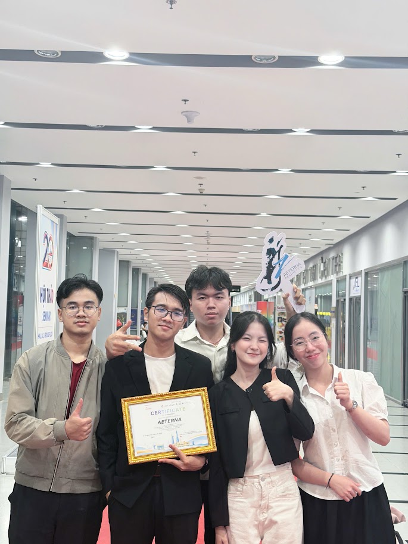
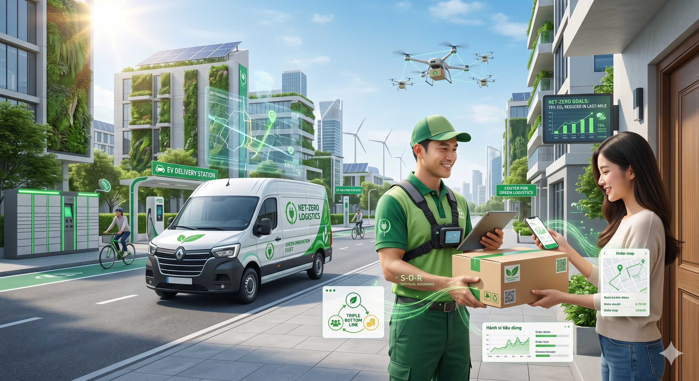
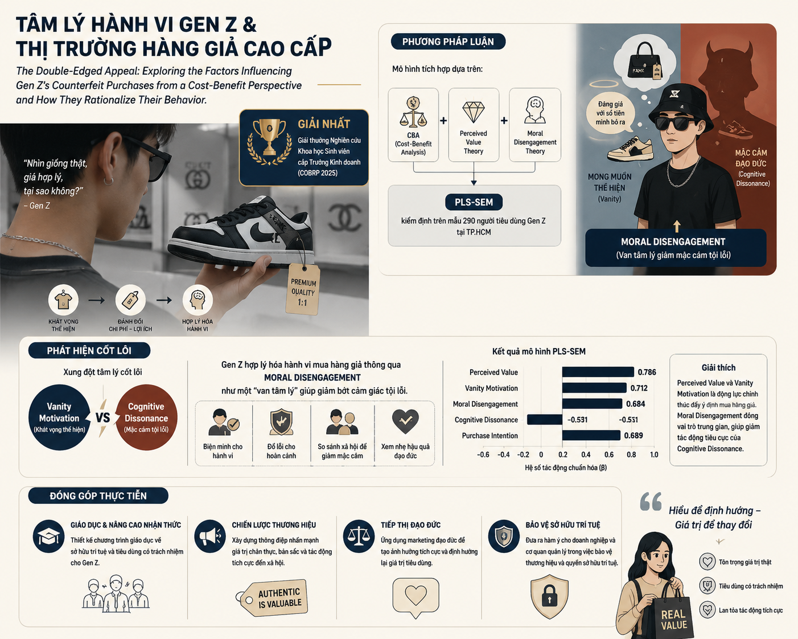

DUONG THE TAI (2005)
Supply Chain & Operations Trainee Candidate
Ứng viên Quản trị viên Tập sự Chuỗi cung ứng & Vận hành theo đuổi chương trình Song ngành Kinh doanh Quốc tế và Logistics tại UEH, kết hợp tư duy tối ưu hóa hệ thống bằng dữ liệu, bản lĩnh điều phối hiện trường thực chiến và kỷ lục hơn 15 giải thưởng học thuật, khởi nghiệp cấp Quốc gia & Khu vực.
1.2 — Key Performance Indicators (KPIs)
VERIFIED METRICSAcademic Achievements
An impressive record with over 15 major championships, high honors, and exemplary research awards in the fields of business, entrepreneurship, and logistics nationwide. I believe 2025 is a landmark year for my achievements, as winning 10 awards in one year across two semesters at UEH University truly requires overcoming many obstacles.
Top-Tier Degrees
Simultaneously commanding a high-performance Dual Major at the University of Economics Ho Chi Minh City (UEH): International Business & Logistics and Supply Chain Management.
Venture Startups
Proven entrepreneurial execution as Founder & Manager, scaling Unistay student housing to a 90% occupancy rate (25% net margin) and EduTynker to 10,000+ active community members.
1.3 — Selected Portfolio Masterpieces
HIGHLIGHTED WORKS
Global Product Marketing & Game Optimization Strategy
Project Identity: Project AETERNA
Core Impact: Preserving the cultural identity, history, and heritage of 11 Southeast Asian countries by finding the intersection between RPG and MMORPG mechanics.
Strategic Execution: Integrating and visualizing tangible and intangible heritage and historical heroes into project objects.

Automated Container Defect Inspection Simulation
Project Identity: "Cont-Tect" — Team Motion Masters
Core Impact: Slashing average container scanning and validation times from 25 minutes down to 5 minutes per container compared to traditional manual checks.
Strategic Execution: Formulated an automated inspection solution under a high-pressure 24-hour hackathon to optimize port terminal workflows, outperforming 100+ regional teams.

End-to-End Scalable Supply Chain Model
Project Identity: Mealnimals / GroWarriors
Core Impact: Formulated an end-to-end business and scalable logistics model, onboarding 500+ active users in month 1 and restructuring workflows to project a 20% net profit margin.
Strategy Implementation: Built an intermediary platform connecting merchants with users, evolving from a traditional grocery shopping and food distribution model.
1.4 — Skills, Tools & Global Credentials
CAPABILITY MATRIX- VietnameseNative
- EnglishIELTS C1
- ChineseHSK 2
- Logistics Operations Specialist (Tan Minh Tri Academy — TMT OPS & DOCS)
- MOS Certification (Microsoft Office Specialist: Word, Excel, PowerPoint)
1.5 — Contact & Digital Presence
DIRECT CHANNELSAddress: 473 Hoa Hao St, Dien Hong Ward, Ho Chi Minh City
Phone: 0347347538
Email: duongthetai2013@gmail.com
ACADEMICS & SCIENTIFIC RESEARCH
2.1 — University Overview: University of Economics Ho Chi Minh City (UEH)
The University of Economics Ho Chi Minh City (UEH) is one of the key national universities, with nearly 50 years of development, a high-quality faculty, and a wide-ranging international cooperation network with over 125 partners worldwide. UEH has trained hundreds of thousands of bachelors, masters, and doctoral graduates, contributing high-quality human resources to both the public and private sectors in Vietnam. In October 2023, UEH officially transformed into a multi-disciplinary, multi-field university model with four member schools and the UEH Mekong branch. The university has been awarded many prestigious honors, such as the title of Hero of Labor and the First-Class Independence Medal. On international rankings, UEH is among the Top 301+ best universities in Asia according to QS Asia and Top 501–600 universities worldwide according to Times Higher Education in 2025–2026.
International Business
Global Trade, Cross-Border Strategy & Supply Chain
Logistics & Supply Chain Management
Operations, Procurement, Port & Cold-Chain Systems
2.3 — High-Performance Core Courses
Enterprise Resource Planning (ERP)
Focus: Mastering Odoo system for Operations & Logistics management.
Execution: Applied Odoo modules to streamline company-wide workflows, ensure data integrity and real-time tracking of supply chain activities.
International Business Project
Focus: "Eggshell-based Exfoliating Gel/Cream".
Execution: Developed a comprehensive international market entry strategy for a sustainable skincare product, from R&D conceptualization to global supply chain mapping.
Business Simulation
Focus: Leverage the Globus system to make important business decisions.
Execution: Acted as a C-level executive to operate a virtual global corporation. Applied core business intelligence and logistics strategies to compete in a simulated market, optimizing production, pricing, and distribution to maximize market share.
2.4 — Scientific Research Publications & Awards

1. Logistics Xanh Chặng Cuối & Kỷ Nguyên Logistics 5.0
"Exploring Customer Reactions to Green Alternatives in Last-Mile Logistics: The Impact of Shifting to Electric Vans Integrated with Sustainable Practices and Logistics Marketing."
- Ứng dụng mô hình S-O-R (Stimulus-Organism-Response) làm khung lý thuyết chủ đạo.
- Tích hợp mô hình SERVQUAL và lý thuyết Triple Bottom Line (TBL) để xác định các yếu tố quyết định chất lượng dịch vụ chặng cuối.
- Xử lý dữ liệu thực nghiệm từ 472 phản hồi thông qua mô hình cấu trúc tuyến tính SEM (PLS-SEM) trên phần mềm SmartPLS 4.0 và SPSS.
- Chứng minh yếu tố Sự đảm bảo (Assurance) có ảnh hưởng mạnh nhất đến niềm tin của khách hàng đối với các giải pháp vận tải xanh (EcoVan).
- Xác lập mối liên hệ giữa các giá trị bền vững và tính tương tác trong truyền thông tiếp thị Logistics đến hành vi tiêu dùng hiện đại.
Đóng góp thực tiễn: Cung cấp bộ khung dữ liệu cho các doanh nghiệp tối ưu hóa lộ trình chuyển đổi xe tải điện (VinFast EcoVan) nhằm gia tăng lợi thế cạnh tranh và thực hiện cam kết Net-Zero.

2. Tâm Lý Hành Vi Gen Z & Thị Trường Hàng Giả Cao Cấp
"The Double-Edged Appeal: Exploring the Factors Influencing Gen Z's Counterfeit Purchases from a Cost-Benefit Perspective and How They Rationalize Their Behavior."
- Xây dựng mô hình tích hợp dựa trên lý thuyết Phân tích Chi phí - Lợi ích (CBA) và Giá trị cảm nhận (Perceived Value Theory).
- Sử dụng thuyết Ngắt kết nối Đạo đức (Moral Disengagement Theory) để giải mã cơ chế tự hợp lý hóa hành vi tiêu dùng không chính thống.
- Thực hiện khảo sát định lượng và kiểm định giả thuyết bằng PLS-SEM trên mẫu 290 người tiêu dùng Gen Z tại TP.HCM.
- Giải mã sự xung đột giữa Động lực sính diện (Vanity Motivation) và Sự bất hòa nhận thức (Cognitive Dissonance) trong tâm trí Gen Z.
- Phát hiện vai trò của Ngắt kết nối Đạo đức như một "chiếc van tâm lý" giúp người tiêu dùng giảm bớt mặc cảm tội lỗi khi mua hàng giả cao cấp.
Đóng góp thực tiễn: Đề xuất các chiến lược giáo dục thương hiệu và tiếp thị đạo đức, giúp các nhãn hàng cao cấp bảo vệ quyền sở hữu trí tuệ và định hướng lại giá trị tiêu dùng cho thế hệ mới.
14 SELECTED CASE STUDIES
Nhấp vào từng dự án để mở trình đọc toàn văn (Tổng quan, Hành trình, Vai trò, Đóng góp kỹ thuật, Kết quả & Bài học tâm đắc).
CORE VENTURES & LEADERSHIP LOGS
1. Dự Án Khởi Nghiệp & Điều Phối Hiện Trường (Core Ventures)
03 VENTURES2. Điều Phối & Lãnh Đạo Đội Nhóm Ngoại Khóa (Leadership Logs)
06 LOGSOPERATIONS & STRATEGY JOURNAL
Nơi lưu trữ các bài phân tích chuyên sâu về Vận hành thực chiến, Quản trị chuỗi cung ứng, Nghệ thuật dụng nhân và Chiến lược hạ tầng Logistics quốc gia.